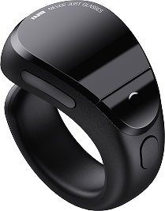
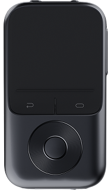
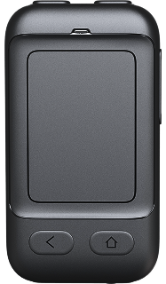
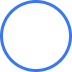
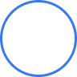
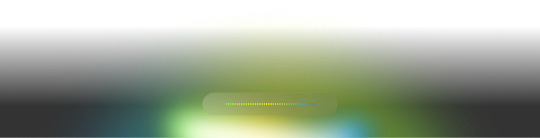

语音交互-唤醒方式
语音唤醒
连接网络后，语音说出"阿目同学"唤醒

INMO Controller
长按OK键

Touchpad 1.0
长按主页键

戒指
连续点击两次功能键



语音交互-退出方式
触控板
长按右边镜腿触控板来退出

INMO Controller
双击返回键退出

Touchpad 1.0
长按返回键



戒指
双击戒指返回键退出




点击非语音助理部分或者熄屏后也会退出语音助理
语音交互-任务型对话

阿目同学，打开应用宝
打开应用
如，语音输入"阿目同学，打开应用宝"

阿目同学，调大音量
系统媒体控制和模式语言切换
如，语音输入"阿目同学，调大（小）音量/亮度"、返回主界面、播放/暂停、拍照/录像、返回上一级界面



你都前面是一个妙蛙种子：萌宠小精灵
草系/毒系种子宝可梦 • 关都地区No.001
日文名 フシギダネ Fushigidane（意为「神秘种子」）
作为宝可梦初代御三家之首，妙蛙种子以生态共生体的科幻设定与攻防兼备的战术纵深，成为跨越25年经久不衰的文化符号。其背后蕴含的「光合作用×生化毒素」能量系统，至今仍是宝可梦生物设计的巅峰范例。

拍照识别
语音输入"我眼前是什么"/"面前有什么东西"等意图时，语音助理会拍下眼前图片并进行识别
语音交互-自动执行复杂指令

阿目同学，帮我去美团点一杯摩卡星冰乐
美团点外卖/淘宝购物/播放腾讯视频/下载安装app
语音输入"阿目同学，帮我去美团点一杯摩卡星冰乐"
在语音框回复"好的"，同时进行语音播报，随之进行相应操作。
对话查询功能
本机功能查询、生活服务查询、事实查询
语音交互-可见即可说
滑动操作
"上滑""下滑""左滑""右滑"对页面进行对应的操作，观看抖音时，唤起阿目同学，说出"上滑"可触发
可以通过指令，进行"点击选择xx、点击xx"
如：在淘宝页面，唤起阿目同学，说出"点击搜索"
注意：
- 能够识别当前页面内容中的可交互元素，用户可通过语音直接操作屏幕上显示的任何可交互元素。
- 仅支持APP的可交互元素，涉及网页或小程序的暂不支持。
- 对于图片元素：用户说"点击图片"，才会点击图片，如果说的是点击图片里的某个内容，也只会回复没有识别到该操作。如果一个屏幕里有多张图片，则默认点击第一张图片。